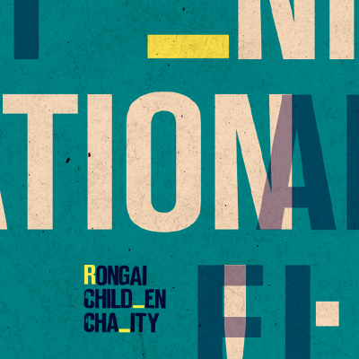
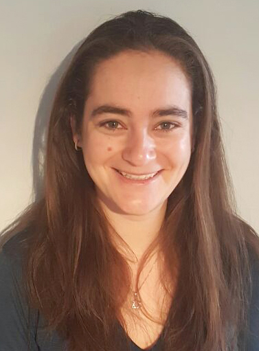

Projects

Rongai Children Charity
Poster design, Typography

Manhole covers typology
Poster design, Information design

Stanford Maps events
Poster design

Aphorisms
Postcard design, Typography

Urban Abstraction
Book design

Visual summary
Book design, Typography
section id="about" class="clearfix">
About

Hello! I'm Yael, a graphic designer and an experienced artworker. Recent graduate of Design for Visual Communication at London College of Communication (UAL). I specialise in editorial design, and am enthusiastic about typography and print. Here are some of my projects, feel free to get in touch.